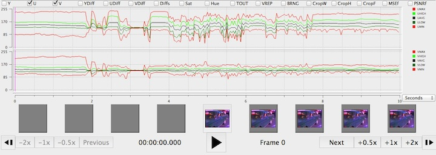
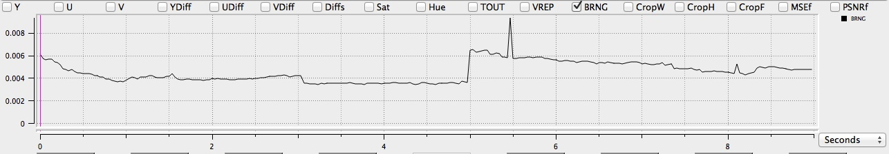

YUV refers to the common method of encoding signal information in video using three distinct components: Y, U, and V. The Y channel carries luma
, or brightness information, while the U and V channels carry chroma
, or color difference information. Specifically in the context of QCTools, YUV is used synonymously with the color encoding specification for digital component video, Y'CbCr, where Cb and Cr represent the color difference components.
Using individual filters, QCTools can analyze the Y, U, and V components of a digital video signal and report on specific characteristics relating to a video's appearance. These filters examine each pixel in a given channel, displaying the maximum (MIN) and minimum (MIN) values at a range of 0 through 255. These values are added up and divided by the total number of pixels to calculate the Average (AVG) value.
| Filter Domain | Filter Name(s) | Values* |
|---|---|---|
| Y Channel | YMIN, YAVG, YMAX | 0-255 |
*Appropriate for the 8-bit video samples analyzed by this tool.
The Y Channel carries information about the brightness of a video signal. Problematic variance in the Y Channel will manifest as a picture that is either too light or too dark, also known as containing luma noise. 8-bit video will have values falling in the range of 0-255 code values per pixel. A picture with well-balanced light levels will have an average, or mid-range Y Channel value of around 128 (YAVG). Graph readings outside of that range will indicate a picture that is either too bright or too dark. A Y Value of 0 would indicate total blackness and a value of 255 would present as entirely white. In the range of values, reference black is at value 16, while reference white is at value 235. Except during particular moments like scene changes where one might expect abrupt spikes, the average values of Y channels should remain relatively stable or constant with little variation. Portions of video showing extreme changes in average values (and not corresponding to a scene change or otherwise dramatic edit) likely indicate a picture error.
Y values = Combined graph of YMAX, YHIGH, YAVG, YLOW, and YMINIn the graph below, you can see the YMAX spikes which would manifest as white lines across the video picture:
The graph below illustrates a reading with many luma spikes in the YLOW, YAVG, and YHIGH, most notably in the first second of the graph.

| Filter Domain | Filter Name(s) | Values |
|---|---|---|
| U Channel | UMIN, UAVG, UMAX | 0-255 |
| V Channel | VMIN, VAVG, VMAX | 0-255 |
The U and V Channels represent the chrominance, or color differences of a picture. With consideration to the RGB color encoding matrix, U can be read as "B - Y" (blue minus luma), while V can be read as "R - Y" (red minus luma). U and V filters act to detect color abnormalities in video. While it can be difficult to derive meaning from U or V values on their own, these filters provide supplementary information and can be good indicators of artifacts, especially when occurring in tandem with similar Y Value readings. Black and white video contains no chrominance information so should present flat-lines (or no data) for UV channels. Activity in UV Channels for black and white video content, however, would certainly be an indication of chrominance noise.
Alternatively, a color video which shows flat-lines for these channels would be an indicator of a color drop-out scenario.
U values, V values = Combined graph of UMIN, ULOW, UAVG, UHIGH, and UMAX, Combined graph of VMIN, VLOW, VAVG, VHIGH, VMAX
UMIN, VMIN = U channel minimum, V channel minimumThe graph of this video file shows dramatic variance in U and V MIN/MAX values, affects UAVG and VAVG values as well. Especially apparent from approximately around 3 and 7s where horizontal black/ white/ colored lines would likely be seen obscuring the image (color loss ).
This is a good example of dramatic activity in U and V channels showing around the 5s mark, corresponding to chrominance noise in the video (visible rainbow-ed speckles across the picture).

Notice U noise in the graph below from approximately 2.86s to 4.37s. Also seen in UDIF reading.

| Filter Domain | Filter Name(s) | Values* |
|---|---|---|
| Y Channel | YLOW, YHIGH | 16-235 |
| U Channel | ULOW, UHIGH | 16-235 |
| V Channel | VLOW, VHIGH | 16-235 |
This filter works in a similar fashion as the YUV *MIN and *MAX filters, but instead of looking at the absolute minimum and maximum value for these channels, it looks at the 10th percentile (LOW, or 16 pixels) and 95th percentile (HIGH, or 235 pixels) which present the outside limits or 'headroom' of the legal broadcast range. An extreme minimum or maximum value could dramatically skew the graph but because they may be outside the viewable broadcast image, they may not necessarily be meaningful indicators of a problematic visual image. For that reason, it is useful to screen for the low/high values within broadcast range.
| Filter Domain | Filter Name(s) | Values |
|---|---|---|
| Y Channel | YDIF | 0-84 |
| Y Channel | YDIF1 | 0-84 |
| Y Channel | YDIF2 | 0-84 |
| U Channel | UDIF | 0-61 |
| V Channel | VDIF | 0-18 |
This QC Tools filter selects two successive frames of video and subtracts the values of one from the other in order to find the change, or difference, between the two frames (measured in pixels). This information is meaningful in that it indicates the rapidity with which a video picture is changing from one frame to the next. Aside from scene-change scenarios, a video picture should not undergo dramatic changes in these values unless an artifact is present. A scene-change would present as a short but dramatic spike in the graph, and that is normal. Other YUV Difference spikes may be present in cases where picture problems are visible. Often, head problems with corrupted frames will result in large YUV Difference values/graph spikes.
The YDIF1 and YDIF2 filters help detect artifacts caused by video deck head clogs, with each filter providing a reading per head. The filter is built on the assumption that one head is functioning (and as such, presents as a stable graph line), and one is corrupt (presenting as a variable line with spikes and troughs). A user, in reading the two results against one another, would see the areas where the two readings diverge as red portions on the graph. See graph below: between 17-19s the YDIF1 and YDIF2 readings vary dramatically, presenting as red portions in the graph.
YDIF = Difference of Y Channel between two frames| Filter Domain | Filter Name(s) | Range |
|---|---|---|
| Temporal Outliers | TOUT | 0.00-0.09 |
This filter was created to detect white speckle noise in analog VHS and 8mm video. It works by analyzing the current pixel against the two above and below and calculates an average value. In cases where the filter detects a pixel value which is dramatically outside of this established average, the graph will show small spikes, or blips, which correspond to white speckling in the video. The range of 0.00-0.09 is considered normal, and anything above that range is a questionable quality issue.
TOUT = Temporal Outliers| Filter Domain | Filter Name(s) | Range |
|---|---|---|
| Vertical Line Repetitions | VREP | 0.00-0.92 |
Vertical Line Repetitions, or the VREP filter, is useful in analyzing pneumatic tapes (such as U-Matic) and detecting artifacts generated in the course of the digitization process. Specifically, VREP detects the repetition of lines in a video. The filter works by taking a given video line and comparing it against a video line that occurs 4 pixels earlier. If the difference in the two is less than 512, the filter reads them as being close enough to be deemed repetitious.
VREP = Vertical Line Repetitions
| Filter Domain | Filter Name(s) | Range |
|---|---|---|
| Broadcast Range | BRNG | 0.00-0.79 |
The BRNG filter is one that identifies the number of pixels which fall outside the standard video broadcast range of 16-235 pixels. Normal, noise-free video would not trigger this filer, but noise occurring outside of these parameters would read as spikes in the graph. Typically anything with a value over 0.01 will read as an artifact. While the RANG filter is good at detecting the general presence of noise, it can be a bit non-specific in its identification of the causes.
BRNG = Broadcast Range
The graph below shows sharp spike in BRNG around 5.5s of the video which likely manifests as an over-brightness of this portion of the video.
